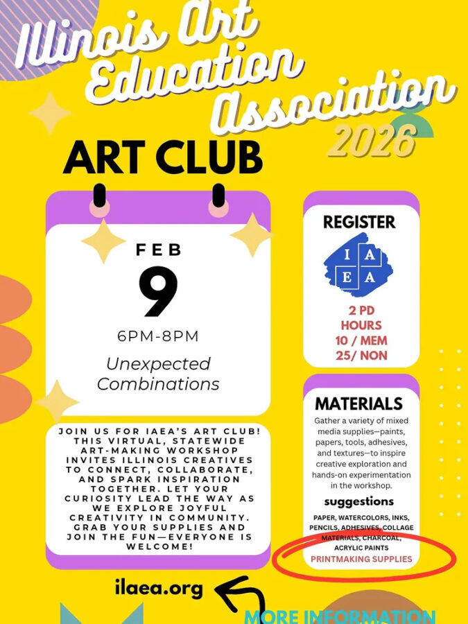

IAEA Art Club
5 Dates of Creative Curiosity!
A 2-hour hands-on workshop for Illinois art teachers focused on creative exploration, reflection, and community-building. Participants engage in adaptable mixed-media processes that model inquiry-based, student-centered learning. Aligned with ISBE standards, the session supports diverse learners, strong pedagogy, positive learning environments, collaboration, and professional growth.
Welcome and overview, technique demo, hands-on art-making, reflective prompts, and collaborative sharing. A structured 2-hour flow supporting creativity, curiosity, and professional connection.
Sign-up for any of the 5 monthly club meetings this spring!
2 PD hours available per event.